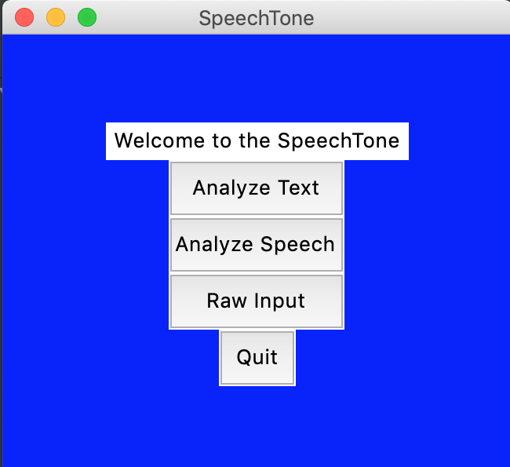
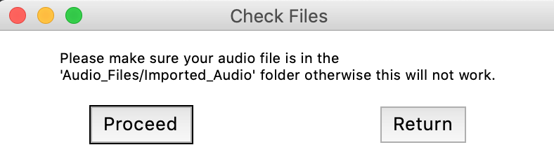
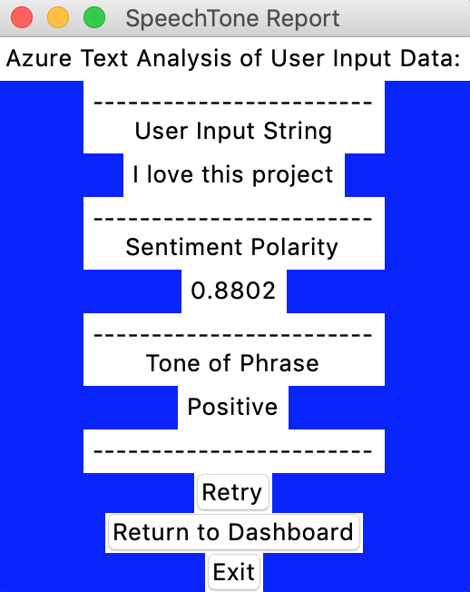

Quick Info: SpeechTone
Language: Python
Description: Provides Sentiment and Tone analysis through machine learning and natural language processing
Notable Features: Supports Recorded Audio, Spoken Words, and Written Text || Audio Format: .WAV
Description: Provides Sentiment and Tone analysis through machine learning and natural language processing
Notable Features: Supports Recorded Audio, Spoken Words, and Written Text || Audio Format: .WAV
Packages Used || [pip3 install {package_name}]
- json
- requests
- tkinter
- pymsgbox
- azure.cognitiveservices.language.textanalytics || TextAnalyticsClient
- msrest.authentication || CognitiveServicesCredentials
- sys || byteorder
- array || array
- struct || pack
- pyaudio
- wave
Application Images
- You can choose from three different options of analysis
- You can speak directly into your computer

- You can analyze pre recorded audio too

- The output is displayed in the format below
